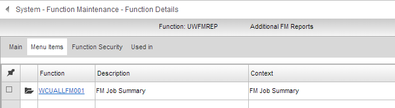

Adding functions to standard menus
A. Background
Function Maintenance in
In order for these custom menu items to appear on the menu tree, you must create a new menu function in Function Maintenance, with the same code as the standard menu except beginning with U instead of %. For example, creating a menu function UWFMREP allows you to append functions to the standard %WFMREP menu.
| Standard Menu | Custom Menu | Menu as Displayed | ||
| %WxxREP | UWxxREP |
 Reports Reports |
||
| Standard Function 1 | Custom Function 1 |  Standard Function 1 Standard Function 1 |
||
| Standard Function 2 | Custom Function 2 | Standard Function 2 |
||
| Standard Function 3 | Standard Function 3 |
|||
| Custom Function 1
|
||||
| Custom Function 2
|
NOTE
B. How to create custom menus
This procedure describes how to use Function Maintenance to add user-defined versions of menus.
Example: Add functions to the FM Reports menu (%WFMENQ).
NOTE
- Go to Function Maintenance in the System module and click
 .
. - Enter a Function with a code that matches the standard menu item code but replace the % with a U.
Example: Add an FM function named UWFMREP.
- Enter a description for the function, such as "Additional FM Reports". (This description will not appear on the menus.)
- Select Menu in the Type field.
- Select the Module where this menu should be placed.
- Select Menu in the Category field.

- Save the new function. You will not see any change to the standard menu until you add functions to this new menu.
- Repeat Steps 1 to 7 above for each menu you wish to add to.
C. How to add functions to custom menus
In Function Maintenance, you can add menu items to the function(s) you created in Part B above. To do this:
- Go to Function Maintenance and click the function link for the menu you want to add to.
Example: For FM reports, click UWFMREP to add items to the custom report menu.
- On the Function Maintenance detail screen, go to the Menu Items tab and click .
- Enter the function you want to add to the menu.
Example: If you have a custom function WCUALLFM001 - FM

- Follow Steps 1 to 3 above to continue adding other functions to the menu.
Remember: You can also continue at this point to add standard functions (beginning with %W) or further custom menus to this custom menu.
- Once completed, the tree menu displays the function(s) you added to the custom menu.
Example:

- Use Function Security to ensure that only users of appropriate authority are able to access the functions. If a user is not permitted to run a function, it will not appear on the menu. See How Function Access Works for more information.
NOTE